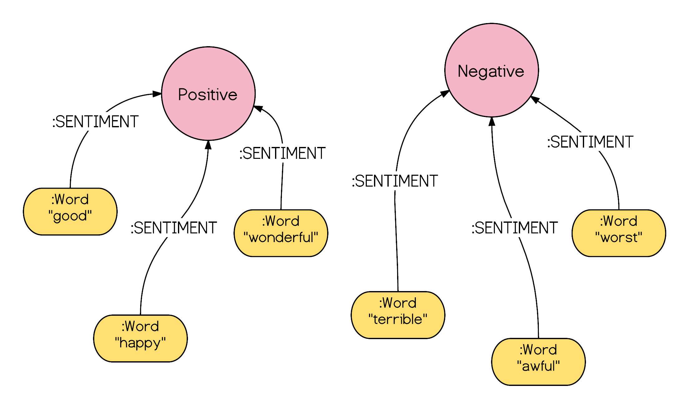

MS Candidate Data Science New York University
“Using data to explore the unexplored...”

Built Multi-Layer Neural Network using 5000 labeled and 100000 unlabeled data from STL-10 dataset to classify image object and used t-SNE to visualize image clusters representing different classes
Built Predictive model using SVM on Movie Reviews Data (Text Data) to classify positive and negative user responses
Built Multi-Layer Convolutional Neural Network using MNIST Dataset to classify handwritten digit into 10 possible classes (0-9).
Built the ensemble predictive model using Naïve Bayes (Text Features Analysis) and Random Forest/Decision Tree (Numeric Feature Analysis) Algorithms to classify videos in 15 different categories
Developed interactive python program to analyze the data Statistically and to explore relationship between video features
- Worked as a core technical member of the software development team, where I performed real-time customer data analysis.
- Have done extensive work in Back-End Query Processing, Data Mining, ETL, Data Integration, and Data Migration.
- Acquired proficiency in Unix, SQL/PLSQL scripting by doing substantial work on data flow creation (CSV) between interfaces.
- Performed Quantitative Analysis and developed dynamic data reports with the color graphs using BIRT to analyze client’s data.
- Delivered projects using Agile development methodology and enhanced management skills by active participation during project discussions with clients, project scheduling, project designing.
- Developed an interface to mine relative information and represented it into color graphs and real time Google maps on GUI.